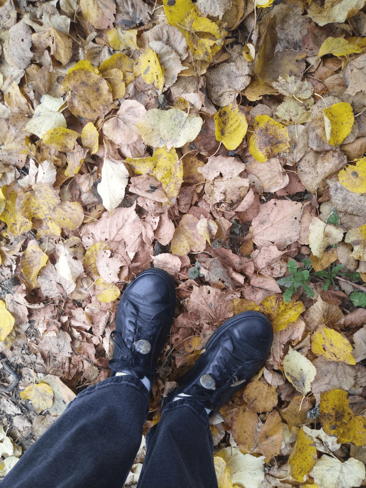
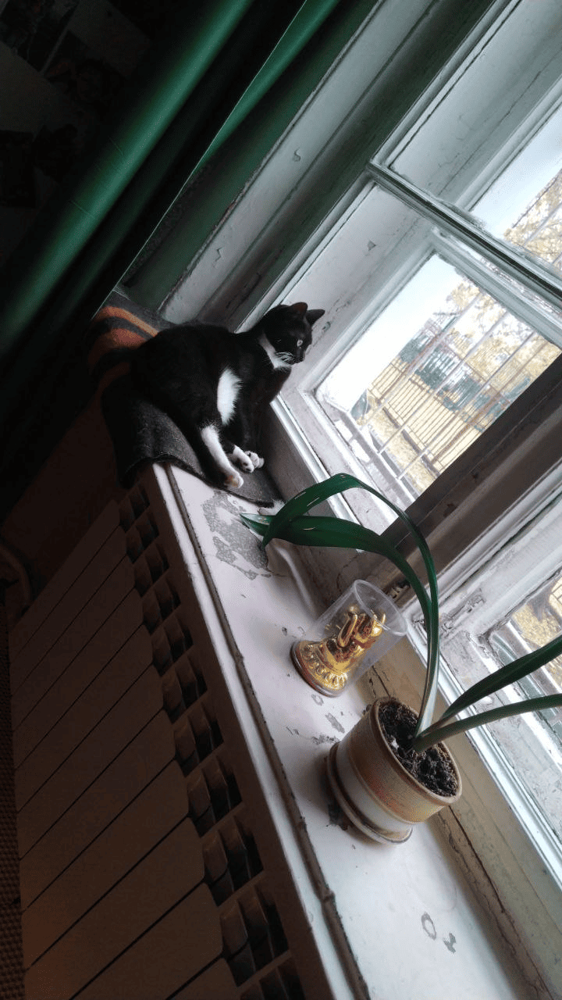
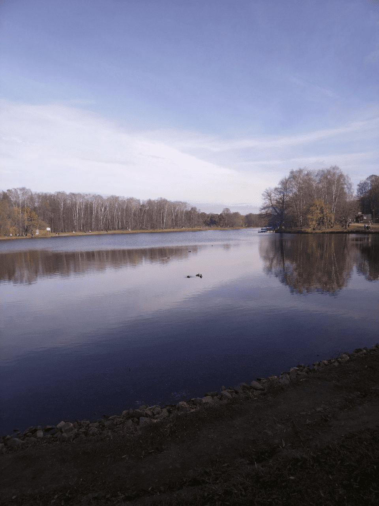
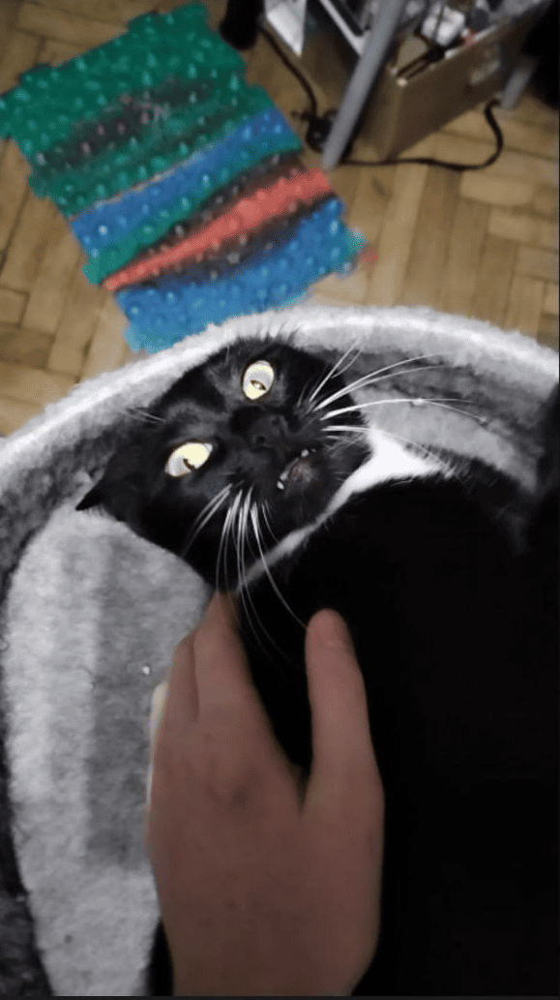
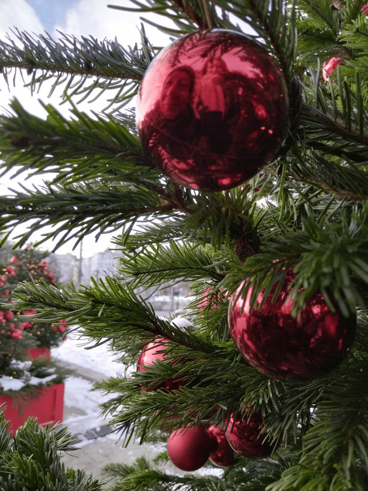
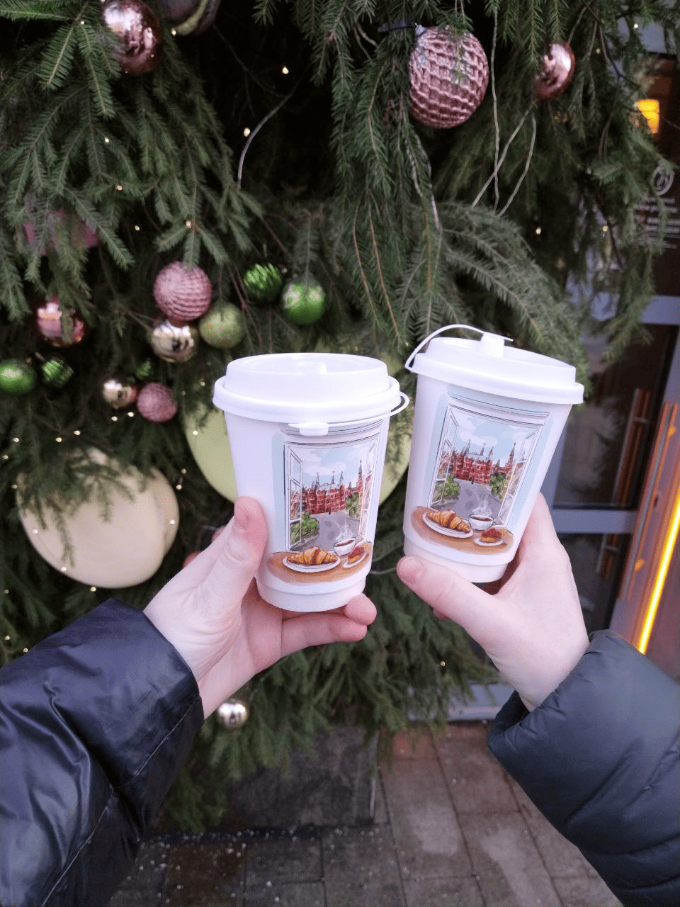

Это было самое начало пути. На этом этапе важно было проникнуться основами и настроиться на учёбу. И, возможно, подумать, как новые знания могут повлиять на ваше будущее.
Самое сложное в любом деле - это начать, а дальше как-то само пойдет. Вот и у меня самым сложным в начале обучения - было решиться начать : вдруг не потяну, вдруг не понравится, вдруг никто не поддержит
1 спринт: Я — чистый лист
<Адаптация>

На первых этапах мы работали со страхами и сомнениями, которые часто испытывают новички. Один из них — страх перед чистым листом. Это, конечно же, намного сложнее, чем боязнь куска бумаги. Часто за этим ощущением скрываются более глубокие вопросы: с чего начать? а вдруг будет слишком сложно? что, если я не справлюсь?
В начале обучения было волнительно, но я как никак бывший студент, глобально поменялась только форма обучения и длительность учебного семестра. Так что я с энтузиазмом погрузилась в мир Практикума
1 спринт: А если не получится?
<Первый успех>

Первый проект — позади! Но это всё ещё самое начало пути. Радость могла быстро померкнуть и смениться ожиданием провала. Или вы, наоборот, могли вдохновиться успехами и поверить в себя.
Первый проект я делала полностью сама, проигнорировав руководство в курсе Практикума - привычка бывшего студента все и всегда делать самой. Естественно, из-за этого пришлось весьма конкретно переделывать проектную. Итогом стали восторг от того, что у меня получилось, и готовность к новым свершениям
2 спринт: Погоня за идеалом
<Методичность>

На этом этапе вы уже достаточно разбирались в основах вёрстки, чтобы понять, как много ещё впереди. Вы могли попытаться погнаться за идеалом и понять, что он недостижим. А, может, вы вовсе и не подвержены перфекционизму и вместо того, чтобы сделать идеально, старались просто сделать.
Первый спринт у меня вышел довольно хаотичным - за пару дней я проглотила всю теорию и еще за неделю сделала проектную, второй спринт у меня был распланирован на две недели, чтобы с запасом успеть проекную. По плану все прошло гладко, даже осталось время на то, чтобы начать наконец гулять по любимому городу
2 спринт: О тех, кто рядом
<Мотивация>

Всё это время вы были не одиноки (хотя, возможно, иногда и чувствовали, что одни против целого мира). Вас окружали одногруппники, команда сопровождения и просто близкие люди, которым можно пожаловаться, если очередной макет просто так не поддавался. Осваивать что-то новое легче, когда рядом есть единомышленники, не правда ли?
На всем обучении меня оченьсильно поддерживали мои семья и друзья. Когда мне казалось, что все, чем я занимаюсь - бессмысленная трата времени, именно эти люди поддерживали меня и давали мотивацию двигаться дальше. Самая лучшая мотивация - это, естественно, моя вечно голодная кошка, которую нужно чем-то кормить)
3 спринт: Обходные стратегии
<Перемены>

На этом курсе вы постоянно решали разные задачи. В какой-то момент вам могло показаться, что решения просто иссякли. Значит, пришло время посмотреть на задачу под другим углом.
У меня постоянно так было: сидишь над задачей, думаешь, и в теории уже все перекопал, и чат гпт поспрашивал, а решение найти все никак не получается, а потом, забив на все, идешь гулять или садишься за сериал, и через какое-то время решение простреливает тебя само. Смена рода деятельности - лучший способ выйти из тупика!
3 спринт: Когда опускаются руки
<Двигаться дальше>

Во время учёбы часто возникает чувство, когда не знаешь, за что хвататься. Вроде и проектную пора сдавать, и задачи хочется порешать, и в теории получше разобраться, и жизнь не забыть пожить. В такие моменты очень нужна концентрация. Вспомните, откуда вы её черпали.
Концентрация - это вечная проблема. В таких случаях я сначала составляю список дел, потом распределяю задачи по срочности и наконец делю задачи на подзадачи. Непосредственно для концентрации помогают кофе и полная изоляция от интернета и соцсетей, а то как зайдешь на маркетплейс, так до ночи и пропрокрастинируешь